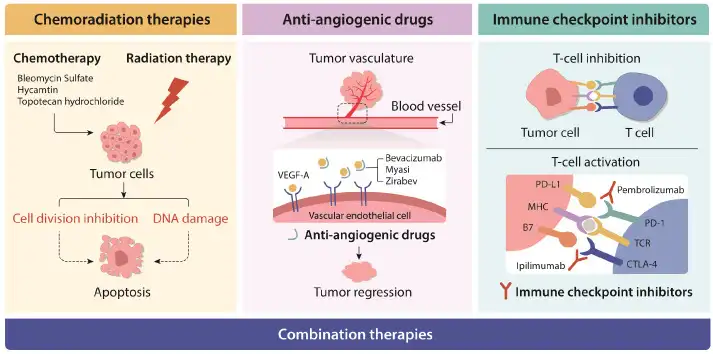
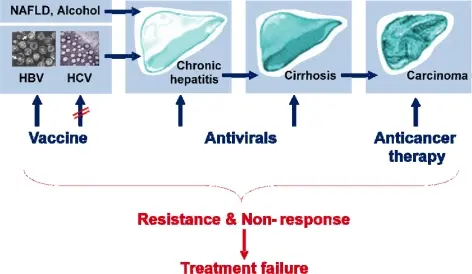
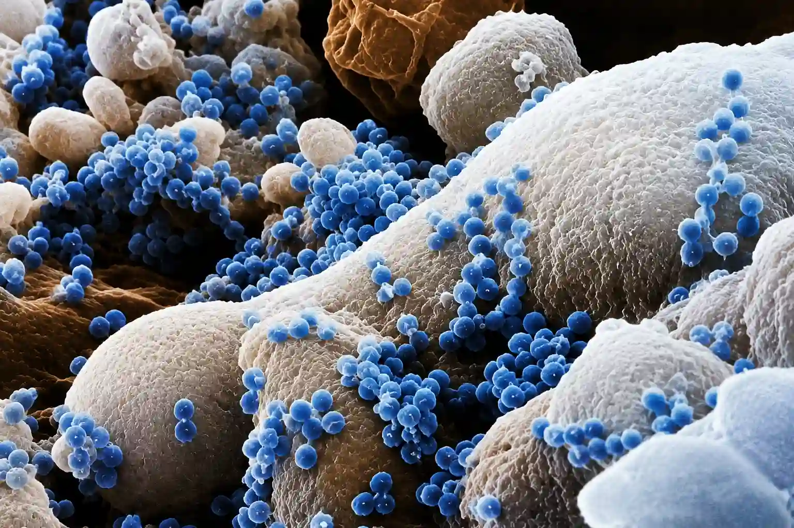
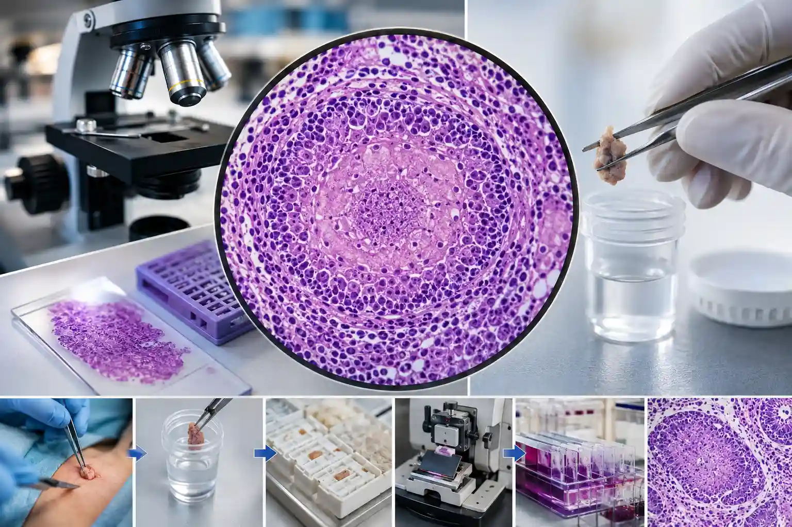
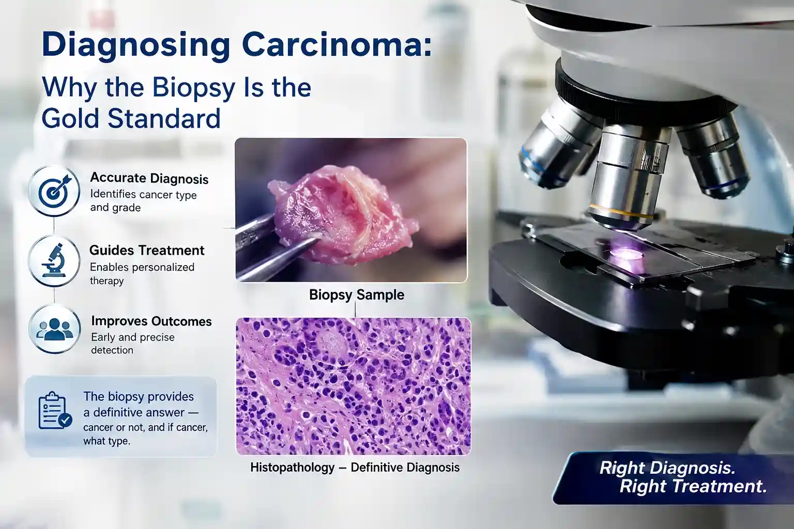
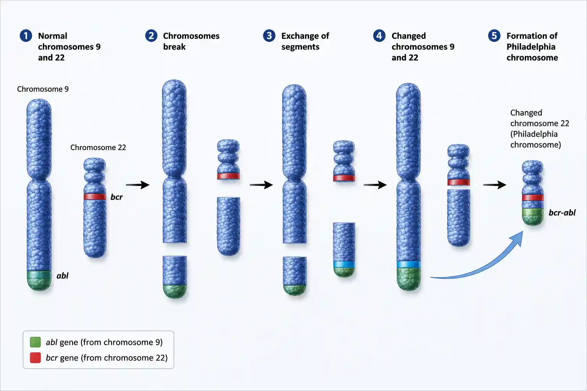

Milestones in diagnostic pathology

Cervical cancer: the Pap smear & HPV
How cytology screening and the HPV discovery made cervical cancer largely preventable — the story behind our Pap and HPV tests.

Hepatitis B & C and liver cancer
How identifying two viruses linked chronic infection to liver cancer — and why testing for HBV and HCV matters.

HIV: from discovery to molecular testing
How isolating a virus and building tests to detect it turned a once-fatal infection into a manageable, monitored condition.

Tuberculosis: Koch’s bacillus to molecular
How identifying the TB bacterium — and later detecting its DNA — sped up diagnosis of one of the world’s oldest diseases.

HLA-B27 & ankylosing spondylitis
How one genetic marker, read alongside the clinical picture, helps make sense of long-standing inflammatory back pain.

The granuloma under the microscope
How a distinctive cluster of immune cells on a biopsy points the pathologist toward TB and other diagnoses.

Diagnosing carcinoma: the biopsy
Why examining the tissue itself remains the definitive way to diagnose cancer — the foundation of modern pathology.

The Philadelphia chromosome
How one abnormal chromosome in leukaemia launched targeted therapy and shaped modern molecular diagnostics. Educational milestone.